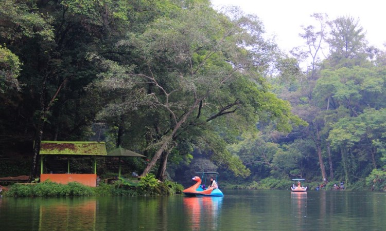
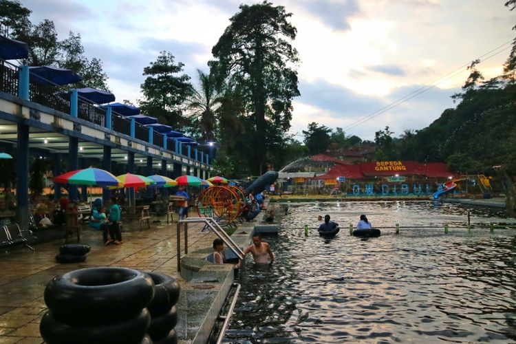

Sejarah
Terdapat beberapa hipotesis mengenai asal-usul nama Kuningan. Pertama, menurut sejarawan Edi Suhardi Ekajati, nama "Kuningan" berasal dari nama logam paduan dengan nama yang sama. Kuningan merupakan logam campuran antara tembaga, timah, dan perak, yang kemudian disepuh sehingga mengkilat seperti emas.
Ekajati menyebut bahwa ditemukan patung dan alat keperluan rumah tangga terbuat dari kuningan di Jalaksana, tepatnya di Desa Sangkanherang. Patung itu berasal dari zaman Megalitikum. Patung ini menjadi incaran bagi kaum menak semenjak ditemukan pada tahun 1914 hingga 1950-an.
Ekajati mencocokkan etimologi tersebut dengan dua cerita yang berkaitan dengan bokor kuning. Dalam kisah Ciung Wanara, ada sebuah bokor terbuat dari kuningan. Bokor itu digunakan oleh Raja Galuh untuk menguji seorang pendeta bernama Ajar Sukaresi yang bertapa di Gunung Padang. Ajar Sukaresi diminta Sang Raja untuk menaksir apakah Permaisurinya hamil atau tidak, dengan memasang bokor kuningan itu di perutnya. Pendeta yang sudah mengetahui rencana jahat sang Raja kemudian menaksir bahwa perut sang Permaisuri telah hamil. Raja pun berhasil mengelabui Pendeta dan sang Pendeta pun dijatuhi hukuman mati. Tak lama kemudian sang Permaisuri pun benar-benar hamil. Dengan gelap mata, Sang Raja ini marah dan menendang bokor kuningan, kuali, dan penjara besi yang berada di dekatnya. Bokor itu pun jatuh di daerah yang bernama Kuningan, sedangkan kuali di Kawali (Kabupaten Ciamis), dan penjara besi bernama Kandangwesi di Garut selatan.[
Dalam naskah Babad Cirebon dan juga tradisi lisan masyarakat Kuningan, bokor kuningan digunakan untuk menguji Sunan Gunung Jati, salah seorang wali. Hal yang membedakan adalah waktu dan tempatnya serta tujuan dan akibatnya, tanpa adanya penendangan bokor. Secara latar tempat dan waktunya, Ciung Wanara terjadi pada zaman Hindu-Buddha di wilayah Bojong Galuh, sedangkan Babad Cirebon dan tradisi lisan terjadi pada zaman Islam di wilayah Luragung, 19 km timur Kuningan. Naskah Babad Cirebon dan tradisi lisan menyebutkan bahwa tujuan penggunaan bokor adalah untuk menguji keluhuran ilmu yang dimiliki Sunan Gunung Jati. Putranya kelak dibesarkan oleh Ki Gedeng Luragung, penguasa daerah Luragung, dan kelak setelah dewasa diangkat oleh Sunan Gunung Jati sebagai Adipati Kuningan.[5]
Ada beberapa alternatif lain berkaitan dengan asal-usul nama Kuningan. Kedua, nama Kuningan berasal dari daerah bernama Kajéné yang berarti "sesuatu yang berwarna kuning". Ketiga, Kuningan berasal dari istilah dangiang kuning (sebuah ilmu gaib) yang didapatkan oleh Demunawan, penguasa awal Kuningan pada masa Galuh. Keempat, "Kuningan" berasal dari wuku dan hari raya dengan nama yang sama.[5]
Geografis
Kabupaten Kuningan terletak pada titik koordinat 108° 23–108° 47 Bujur Timur dan 6° 47–7° 12 Lintang Selatan. Sedangkan ibu kotanya terletak pada titik koordinat 6° 45–7° 50 Lintang Selatan dan 105° 20–108° 40 Bujur Timur.
Bagian timur wilayah kabupaten ini adalah dataran rendah, sedang di bagian barat berupa pegunungan, dengan puncaknya Gunung Ceremai (3.078 m) di perbatasan dengan Kabupaten Majalengka. Gunung Ceremai adalah gunung tertinggi di Jawa Barat.
Dilihat dari posisi geografisnya terletak di bagian timur Jawa Barat berada pada lintasan jalan regional yang menghubungkan Kota Cirebon dengan wilayah Priangan Timur dan sebagai jalan alternatif jalur tengah yang menghubungkan Bandung-Majalengka dengan Jawa Tengah.
Secara administratif Kabupaten Kuningan berbatasan dengan:
Sebelah Utara : Kabupaten Cirebon
Sebelah Timur : Kabupaten Brebes (Jawa Tengah)
Sebelah Selatan : Kabupaten Ciamis dan Kabupaten Cilacap (Jawa Tengah)
Sebelah Barat : Kabupaten Majalengka
Demografi
Penduduk Kabupaten Kuningan Tahun 2010 Menurut Hasil Suseda sebanyak 1.122.376 orang dengan Laju Pertumbuhan Penduduk (LPP) sebesar 0,48% per tahun dan Angka Harapan Hidup (AHH) 70,76 tahun. Penduduk perempuan sebanyak 580.796 orang dan penduduk laki-laki sebanyak 564.801 orang dengan rasio jenis kelamin sebesar 99,3 % artinya jumlah penduduk perempuan lebih banyak dibanding penduduk laki-laki. Diperkirakan hampir 25% penduduk Kuningan bersifat komuter, mereka banyak yang bermigrasi ke kota-kota besar seperti Jakarta, Bandung, Yogyakarta dan sebagainya.
Penduduk Kuningan umumnya menggunakan bahasa Sunda dialek Kuningan. Mayoritas Penduduk Kuningan beragama Islam sekitar 98% (di daerah desa Manislor terdapat komunitas penduduk yang menganut aliran Ahmadiyah), lainnnya beragama Kristen Katolik yang tersebar di wilayah Cigugur, Cisantana, Citangtu, Cibunut, sedangkan sisanya beragama Protestan dan Buddha yang kebanyakan terdapat di kota Kuningan. Di wilayah Cigugur juga terdapat penduduk yang menganut aliran kepercayaan yang disebut Aliran Jawa Sunda.
Sebagain besar penduduk kabupaten Kuningan bermatapencaharian sebagai petani (petani penggarap dan buruh tani), dan lainnya bekerja sebagai Pedagang, Pegawai negeri Sipil, TNI, Polisi, Wiraswasta dan sebagainya.
Angka beban tanggungan (Dependency Ratio) Kabupaten Kuningan tahun 2007 kondisinya tidak jauh berbeda dengan tahun sebelumnya yaitu mencapai angka 50,00. Angka beban tanggungan (ABT) merupakan perbandingan antara penduduk yang belum/tidak produktif (usia 0–14 tahun dan usia 65 tahun ke atas) dibanding dengan penduduk usia produktif (usia 15–64 tahun), berarti pada tahun 2007 setiap 100 penduduk usia produktif di Kabupaten Kuningan menanggung sebanyak 50 penduduk usia belum/tidak produktif.
Pendidikan
Menurut data Suseda tahun 2009, persentase penduduk dewasa yang melek huruf di Kabupaten Kuningan mencapai 98,03 % sedangkan hasil Suseda 2010 menunjukkan adanya perbaikan menjadi 98,27%. Begitu pula rata-rata lama sekolah, pada tahun 2009, rata-rata lama sekolah penduduk Kabupaten Kuningan sekitar 8,33 tahun meningkat menjadi 8,68 tahun pada tahun 2010.
Persentase penduduk Kabupaten Kuningan usia 10 tahun ke atas yang berpendidikan SD ke bawah sebesar 72,66 persen; tamat SMP sebesar 13,73 persen; tamat SMU/SMK sebesar 10,88 persen; dan sebanyak 2,72 persen yang tamat pendidikan tinggi (Akademi/Perguruan Tinggi). Berarti dari 1.000 orang penduduk 10 tahun ke atas hanya 27 orang yang berkesempatan menyelesaikan pendidikan tinggi (Diploma, Akademi, Perguruan tinggi).
Berikut ini adalah daftar perguruan tinggi yang ada di Kabupaten Kuningn:
Universitas Kuningan
Universitas Islam Al-Ihya Kuningan
Sekolah Tinggi Ilmu Kesehatan Kuningan
Sekolah Tinggi Keguruan dan Ilmu Pendidikan Muhammadiyah Kuningan
Sekolah Tinggi Ilmu Kesehatan Muhammadiyah Kuningan
Ekonomi
Laju Pertumbuhan Ekonomi (LPE) Kabupaten Kuningan pada tahun 2011 mencapai 5,43% lebih tinggi dibanding dengan dua tahun sebelumnya yaitu tahun 2009 sebesar 4,39% dan tahun 2010 sebesar 4,99%. Sedangkan Inflasi di Kabupaten Kuningan pada tahun 2010 berdasarkan perhitungan Indeks Harga Konsumen (IHK) tercatat sebesar 6,70%. Sementara Produk Domestik Regional Bruto (PDRB) Kabupaten Kuningan sendiri berdasarkan harga konstan tahun 2000 untuk tahun 2011 sebesar Rp. 4,2 triliun dan PDRB per kapita berdasarkan harga konstan tahun 2000 pada tahun 2011 mencapai Rp. 3,9 juta. Tingkat daya beli masyarakat Kuningan tahun 2010 menurut data Suseda tercatat sebesar Rp. 549 ribu. Dan tingkat pengangguran di Kabupaten Kuningan angkanya cukup besar yaitu mencapai 7,6% dari total angkatan kerja. Lapangan pekerjaan penduduk Kabupaten Kuningan masih didominasi oleh dua sektor ekonomi yaitu sektor pertanian dan perdagangan. Sektor pertanian masih merupakan lapangan usaha yang paling banyak menyerap tenaga kerja. Pada tahun 2010 dari total penduduk Kabupaten Kuningan yang bekerja, 39% bekerja di sektor pertanian dan 30% di sektor perdagangan.
Pariwisata
Kuningan merupakan Kabupaten yang banyak memiliki tempat wisata yang dapat menjadikan pendapatan bagi daerah tersebut, diantara wisata yang ada di Kuningan adalah sebagai berikut
Telaga Remis

Telaga Remis adalah telaga atau danau yang bsa kamu kunjungi dengan jarak kurang lebih 37 km dari kota Kuningan yang bisa ditempuh sekitar 1 jam. Telaga ini dikelilingi oleh pepohonan pinus yang bisa menambah pesonanya dan mampu membuat kita merasa nyaman dan tenang untuk menikmati keindahannya.
Teduhnya suasana serta pemandangan yang indah karena dipagari oleh pepohonan pinus dan beberapa batuan cadas. Semakin membuah kita enggan untuk beranjak meninggalkan tempat yang juga terkenal dengan berbagai cerita legendanya ini.
Berlokasi di Desa Kaduela, Kecamatan Pasawahan, Kabupaten Kuningan, Jawa Barat. Telaga Remis memiliki luas lahan 13 ha, dan danau seluas 3.2 ha. Serta terdapat juga 160 jenis pepohonan seperti pohon Malaka, Kosambi, Sonokeling bahkan Pisang Hyang.
Pihak pengelola juh3 memberikan bebh3apa fasilitas yang bisa dicoba oleh para pengunjung. Seperti sepeda air ataupun lajur khusus bagi yang ingin menikmati keindahan Telaga Remis ini dengan berjalan kaki. Dan bahkan tersedia tempat khusus memancing yang hasil pancingannya juga bisa dibawa pulang.
Cibulan

Objek wisata Cibulan merupakan salah satu objek wisata tertua di Kuningan. Objek wisata ini diresmikan pada 27 Agustus 1939 oleh Bupati Kuningan saat itu, yaitu R.A.A. Mohamand Achmad.
Sebagai catatan, selain di Cibulan, terdapat tiga tempat rekreasi sejenis di Kuningan, yaitu: Kolam Linggarjati di kompleks Taman Linggarjati Indah, Kecamatan Cilimus; Kolam Cigugur, di Kecamatan Cigugur; dan Kolam Darma Loka di Kecamatan Darma.
Di dalam objek wisata ini terdapat dua kolam besar yang berbentuk persegi panjang. Kolam pertama berukuran 35x15 meter persegi dengan kedalaman sekitar 2 meter. Sedangkan, kolam kedua berukuran 45x15 meter persegi yang dibagi menjadi dua bagian. Bagian pertama berkedalaman 60 sentimeter dan bagian kedua berkedalaman 120 sentimeter. Kedua kolam ini selalu dikuras sekali dalam dua minggu, atau bisa lebih. Hal itu bergantung kebersihan air. Setiap kolamnya dihuni oleh puluhan ikan yang berwarna abu-abu kehitaman dan disebut sebagai kancra bodas atau ikan dewa (Tor douronensis). Ukurannya berbagai macam mulai dari yang panjangnya 20-an sentimeter hingga 1 meter. Ikan Dewa adalah sejenis ikan yang dikeramatkan oleh penduduk di sekitar wilayah Desa Manis Kidul karena dipercaya mempunyai keistimewaan tertentu.
Meski semua kolam itu dihuni puluhan ikan kancra bodas atau ikan dewa, kolam-kolam di Cibulan dibuka sebagai kolam pemandian umum. Tempat rekreasi ini dilengkapi pula dengan fasilitas khas tempat pemandian, seperti tempat ganti pakaian, 6 buah kamar kecil dan 2 buah kamar mandi untuk tempat bilas seusai berenang.
Selain kolam dengan ikan dewanya yang jinak, di sudut barat pemandian ini juga terdapat tujuh sumber mata air yang dikeramatkan yang bernama Tujuh Sumur. Tujuh mata air ini berbentuk kolam-kolam kecil yang masing-masing mempunyai nama tersendiri, yaitu: Sumur Kejayaan, Sumur Kemulyaan, Sumur Pengabulan, Sumur Cirancana, Sumur Cisadane, Sumur Kemudahan, dan Sumur Keselamatan. Di antara ketujuh sumur itu, konon ada salah satu sumur yang berisikan Kepiting Emas, yaitu Sumur Cirancana. Apabila ada orang yang sedang mujur dan dapat melihat wujud dari Kepiting Emas itu, maka segala keinginannya akan terkabul.
Telaga Biru Cicerem

Telaga biru adalah telaga yang memiliki air berwarna biru kehijauan alias jernih. Telaga biru situ cicerem memiliki keindahan dan pesona air yang sangat menawan. Tak hanya itu telaga situ cicerem terdapat ikan-ikan yang banyak dan besar-besar.
Telaga biru cicerem kuningan sangat rekomended jika anda berlibur di daerah kuningan jawa barat karena tempat ini sangat istimewa dan mempesona.
Telaga biru situ cicerem kuningan untuk biaya tiketnya sangat murah meriah pastinya untuk detinasi ini cocok untuk berkelompok maupun berkeluarga.
Untuk harga tiket masuk telaga cicerem anda harus membayar 5000 untuk motor dan 10000 untuk pengunjung yang menggunakan mobil, harga tiket berdasarkan dari harga kendaraan bukan harga perorangan
Alamatnya sendiri berlokasi di kaduela, pesawahan, kabupaten kuningan jawa barat. Untuk anda yang ingin menuju telaga ini dari kuningan membutuhkan waktu kurang lebih 70km alias 1 jama lebih.
Curug Putri Palutungan

Curug Putri Palutungan menjadi tempat wisata pertama yang wajib anda kunjungi saat berkunjung ke Kabupaten Kuningan, Jawa Barat.
Curug Putri Palutungan memiliki kekayaan panorama yang sangat memanjakan mata dan pikiran, dijamin saat anda berkunjung segala masalah dan beban hidup akan hilang, sob.
Curug Putri Palutungan ini sangat cocok terutama bagi kalian yang suka hulang healing dan bercengkrama dengan suasana alam yang menenangkan.
Harga tiketnya pun tergolong sangat terjangkau, apalagi dengan fasilitas, pelayanan serta panorama alam yang luar biasa dipastikan anda tidak akan rugi untuk datang lagi ke Curug Putri Palutungan ini.
Anda bisa membuat perkemahan di hutan pinus, membuat api unggun dimalam hari, dan menikmati hangatnya mentari dipagi hari. Anda bisa juga dapat melakukan outbound bersama kerabat kerja, keluarga, ataupun teman-teman tongkrongan.
Tokoh Kuningan
Kadarsah Suryadi, Rektor ITB 2014–2019
Maria Ulfah Santoso, Menteri Sosial wanita pertama Republik Indonesia
Edi Suhardi Ekadjati, Sejarawan, Guru Besar Universitas Padjadjaran
Idik Sulaeman, Pendiri Paskribaka
Mohammad Arsjad Anwar, Ekonom, Guru Besar Universitas Indonesia
Eman Suparman, Ketua Komisi Yudisial, Guru Besar Universitas Padjajaran
Mohamad Surya, Akademisi dan Anggota DPD RI
Anies Baswedan, Akademisi dan Gubernur DKI Jakarta
Maudy Koesnaedi, Artis dan Pembawa Acara
Samsudin Hardjakusumah, Musisi
SN Ratmana, Sastrawan
Ega Noviantika, Penyanyi